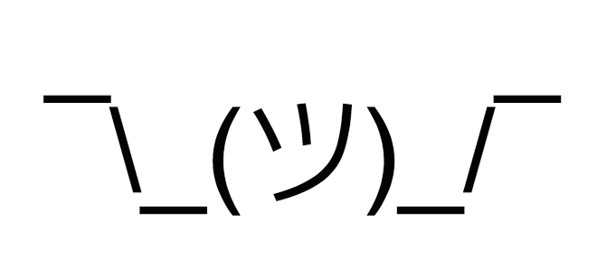

ナンセンスなマイクロ npm パッケージを眺めていた
たまにはお遊び。
マイクロ npm パッケージと呼ばれる、ごくごく短いコードで構成される npm パッケージがよく提供されている。以前 npm 界隈で話題になった left-pad などがこれに該当する。
今回はその中でも、ジョーク的なマイクロパッケージを紹介しようと思う。
shruggie
shrug (シュラッグ) とは、両手を上にあげて肩をすくめる動作のこと。よく外人が「なんてこったい」「まいったまいった」的な時に手を上にあげる、あの動作だ。

shruggie という npm パッケージは、この shrug を表現した顔文字を出力するだけのパッケージだ。
const shruggie = require('shruggie');
console.log( shruggie() );
// => '¯\_(ツ)_/¯'
これだけなのに依存パッケージが5つもあり、インストールするとやたらに容量を食う。ｗ
nope
nope は、英語で様々な「No」の言い方を返してくれる npm パッケージ。
英語表現は en.json に配列で定義されており、この配列から Math.random() を使って1つの文言を取り出すだけのパッケージだ。
const nope = require('../index.js');
console.log( nope() );
// => Absolutely not とか。
こちらは依存パッケージがなく、大変シンプル。
ジョークパッケージだけど、そこでも npm というエコシステムに対する姿勢やコーディングスタイルが見え隠れして面白い。